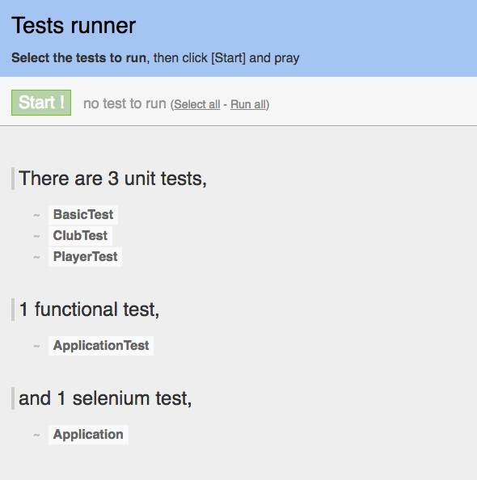
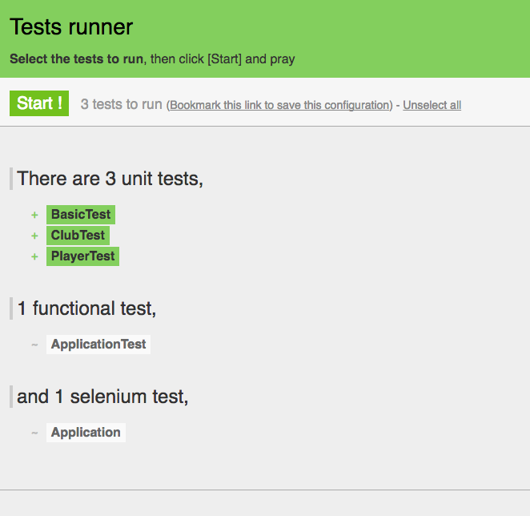

-
Objectives
Build new project to explore JPA relationships in more depth. in particular, define a model with OneToMany, MnyToOne and ManyToMany relations - and test each of the relationships via unit tests in order to ensure they are correctly implemented.
-
JPA Model Project
Create a brand new Play project. Do this by navigating to the correct folder folder (most likely your workspace) and running a command prompt. Then type:
play new jpamodelOnce this has completed, change into the folder just created (jpamodel) and run the eclipsify command:
cd jpamodel play eclipsifyYou can now import the project into eclipse in the usual way.
If you are using Idea, then the command is different:
cd jpamodel play idealizeOnce imported, you may need to make sure the project is configured for an in-memory database - by verifying that
conf/application.confcontains the following:db.default=memInitial Model for Player and Club
In your jpamodel eclipse project, create two new classes in the model package:
Club
package models; import javax.persistence.Entity; import play.db.jpa.Model; @Entity public class Club extends Model { public String name; public Club(String name) { this.name = name; } }Player
package models; import javax.persistence.Entity; import play.db.jpa.Model; @Entity public class Player extends Model { public String name; public Player(String name) { this.name = name; } }Now we create the unit test harnesses. This is similiar to the Junit tests you have been running in Java project, except this time the unit tests are bound into the web an database application.
To do this, in 'test/default package' create these two classes:
ClubTest
import org.junit.*; import java.util.*; import play.test.*; import models.*; public class ClubTest extends UnitTest { @Before public void setup() { } @After public void teardown() { } @Test public void testCreate() { } }PlayerTest
import org.junit.*; import java.util.*; import play.test.*; import models.*; public class PlayerTest extends UnitTest { @Before public void setup() { } @After public void teardown() { } @Test public void testCreate() { } }Run the app now in 'test' mode:
play test...and navigate to the test runner page:
This will look like this initially:

Select the Club and Player tests - and then press 'Start!':

and they should be green. The tests are empty - but we have just verified that the test harness is functioning correctly.
Also try the database interface:
-
Initial Tests for Player and Club
PlayerTest
In PlayerTest introduce a fixture and create some test objects:
public class PlayerTest extends UnitTest { private Player p1, p2, p3; @Before public void setup() { p1 = new Player("mike"); p2 = new Player("jim"); p3 = new Player("frank"); p1.save(); p2.save(); p3.save(); } @After public void teardown() { p1.delete(); p2.delete(); p3.delete(); } @Test public void testCreate() { } }Run the tests - and have a look at the database admin interface (http://localhost:9000/@db). Can you see any player objects? No because teardown() is deleteing all of the objects. Comment out the @After annotation:
//@Afterand run the tests again. This time - if you refresh the database page - you will see the three player objects. Being able to see them in the database interface can be particularly useful if you are introducing new relationships between objects.
Now we will bring in utility function into the Player class:
public static Player findByName(String name) { return find("name", name).first(); }Note this method is 'static'.
Now we can actually implement a test.
@Test public void testCreate() { Player a = Player.findByName("mike"); assertNotNull(a); assertEquals("mike", a.name); Player b = Player.findByName("jim"); assertNotNull(b); assertEquals("jim", b.name); Player c = Player.findByName("frank"); assertNotNull(c); assertEquals("frank", c.name); }This test should pass. Change one of the strings to deliberately force an error just to be sure.
Do one more (negative) test to make sure that if we try to find an object that is not there, we get null:
@Test public void testNotThere() { Player a = Player.findByName("george"); assertNull(a); }All tests should pass now.
ClubTest
Extend Club with the same utility methods as Player:
public static Club findByName(String name) { return find("name", name).first(); }and now we can write a similar set of tests in PlayerTest:
import org.junit.*; import java.util.*; import play.test.*; import models.*; public class ClubTest extends UnitTest { private Club c1, c2, c3; @Before public void setup() { c1 = new Club("tramore"); c2 = new Club("dunmore"); c3 = new Club("fenor"); c1.save(); c2.save(); c3.save(); } @After public void teardown() { c1.delete(); c2.delete(); c3.delete(); } @Test public void testCreate() { Club a = Club.findByName("tramore"); assertNotNull(a); assertEquals("tramore", a.name); Club b = Club.findByName("dunmore"); assertNotNull(b); assertEquals("dunmore", b.name); Club c = Club.findByName("fenor"); assertNotNull(c); assertEquals("fenor", c.name); } @Test public void testNotThere() { Club a = Club.findByName("george"); assertNull(a); } }These tests should run successfully. Experiment with commenting out the @After annotation and seeing the actual objects in the database.
-
Modeling a Player / Club Relationship
Currently there is no relationship between player and club - which can be modeled like this:

We can now implement this relationship. Modify the Club class as follows:
... ... import java.util.ArrayList; import java.util.List; import javax.persistence.CascadeType; import javax.persistence.Entity; import javax.persistence.OneToMany; import play.db.jpa.Model; ... ... public class Club extends Model { //... @OneToMany(cascade=CascadeType.ALL) public List<Player> players; public Club(String name) { this.name = name; this.players = new ArrayList<Player>(); } //... public void addPlayer(Player player) { players.add(player); } //... }This establishes the relationship as modeled in UML.
Testing a Player / Club Relationship
We will focus these tests in the ClubTest class. Expand the fixture:
private Player p1, p2, p3;and in the setup(), create some players and add some of them (not all) to the 'c1' club:
@Before public void setup() { p1 = new Player("mike"); p2 = new Player("jim"); p3 = new Player("frank"); c1 = new Club("tramore"); c2 = new Club("dunmore"); c3 = new Club("fenor"); c1.addPlayer(p1); c1.addPlayer(p2); c1.save(); c2.save(); c3.save(); }We can now write a new test to see if the 'tramore' has the players "mike" and "jim":
@Test public void testPlayers() { Club tramore = Club.findByName("tramore"); assertEquals (2, tramore.players.size()); Player mike = Player.findByName("mike"); Player jim = Player.findByName("jim"); Player frank = Player.findByName("framk"); assertTrue (tramore.players.contains(mike)); assertTrue (tramore.players.contains(jim)); assertFalse (tramore.players.contains(frank)); }This test should pass.
We might be interested in seeing how the database models the relationship. Comment out the @After annotation, and also all of the @Test annotations except one (the last one). Run the test, and then explore the Player objects in the database interface. See if you can make sense of them. You may wish to do this occasionally, but be sure to comment in all the annotations, and perhaps also restart the application as leaving these annotations out will cause serious anomalies in the database.
Now introduce the following test:
@Test public void testRemovePlayer() { Club tramore = Club.findByName("tramore"); assertEquals(2, tramore.players.size()); Player mike = Player.findByName("mike"); assertTrue(tramore.players.contains(mike)); tramore.players.remove(mike); tramore.save(); Club c = Club.findByName("tramore"); assertEquals(1, c.players.size()); mike.delete(); }Read and absorb the logic of this test. As an experiment, comment out the final line (deleting mike). Then look to the database interface and note that mike is still in the database after the test have run.
Note also that if we leave the deletion of mike commented out, and re-run the tests - then other tests start to fail. The only cure now will be to restart the application.
-
Bidirectional Club / Player Relationship
We might like each player to also 'know' which club he/she belongs to. In fact this is probably a more natural relationship for these model elements:

Contrast this with the earlier version:
Implementing this variant of the relationship requires additional attributes and annotations in both Player and Club.
Player:
... import javax.persistence.ManyToOne; ... @ManyToOne public Club club;Club
@OneToMany(mappedBy="club", cascade=CascadeType.ALL) public List<Player> players;The name 'club' must match in both the annotation and the attribute. We also need to make the following adjustment to the Club.addPlayer method:
public void addPlayer(Player player) { player.club = this; players.add(player); }This method ensures that the relationship is correctly established.
No adjustment to the model can be considered complete without a unit test. Introduce the following test to ClubTest:
@Test public void testPlayerClub() { Player mike = Player.findByName("mike"); assertNotNull (mike.club); assertEquals ("tramore", mike.club.name); }Whenever you change the model you should restart the application. Do this now and make sure this passes.
-
Division + Sponsor
We would now like to extend the model to include the following extra classes:

These are the new classes for Division & Sponsor:
Division.java
package models; import java.util.ArrayList; import java.util.HashSet; import java.util.List; import java.util.Set; import javax.persistence.CascadeType; import javax.persistence.Entity; import javax.persistence.OneToMany; import play.db.jpa.Model; @Entity public class Division extends Model { public String name; @OneToMany(cascade=CascadeType.ALL) public List<Club> members; public Division(String name) { this.name = name; members = new ArrayList<Club>(); } public void addClub(Club club) { members.add(club); } public String toString() { return name; } public static Division findByName(String name) { return find("name", name).first(); } }Sponsor.java
package models; import java.util.ArrayList; import java.util.HashSet; import java.util.List; import java.util.Set; import javax.persistence.Entity; import javax.persistence.JoinTable; import javax.persistence.ManyToMany; import play.db.jpa.Model; @Entity public class Sponsor extends Model { public String name; @ManyToMany (mappedBy="sponsors") public List<Club> support; public Sponsor(String name) { this.name = name; support = new ArrayList<Club>(); } public void addSuport(Club club) { support.add(club); } public String toString() { return name; } }- some modifications to Club:
Club.java
//... @ManyToMany public List<Sponsor> sponsors; //... public Club(String name) { this.name = name; this.players = new ArrayList<Player>(); this.sponsors = new ArrayList<Sponsor>(); } public void addSponsor(Sponsor company) { sponsors.add(company); } -
Tests
We can significantly simplify aspects of the testing if we invest some time in setting up test objects in yaml first.
Create a 'data.yml' file in 'conf' and populate as follows:
Sponsor(pub): name: pub Sponsor(newsagent): name: newsagent Club(dunmore): name: dunmore Club(tramore): name: tramore sponsors: - pub - newsagent Club(fenor): name: fenor sponsors: - newsagent Player(jim): name: jim club: dunmore Player(mary): name: mary club: dunmore Player(sam): name: sam club: tramore Player(john): name: john club: tramore Player(mike): name: mike club: fenor Player(linda): name: linda club: fenor Division(senior): name: senior members: - tramore - dunmore Division(junior): name: junior members: - fenor Sponsor(newsagent): name: newsagent support: - tramore - fenor Sponsor(pub): name: pub support: - tramoreNote carefully how the sponsors appear twice. Why is this?
Now bring in a new test class that will exercise this model:
import org.junit.*; import java.util.*; import play.Logger; import play.test.*; import models.*; public class ComprehensiveTest extends UnitTest { @Before public void setup() { Fixtures.loadModels("data.yml"); } @After public void teardown() { Fixtures.deleteAllModels(); } @Test public void testPlayerClubLong() { Player jim; Club dunmore; jim = Player.find("byName", "jim").first(); assertNotNull(jim); assertEquals(jim.name, "jim"); dunmore = jim.club; assertEquals("dunmore", dunmore.name); dunmore = Club.find("byName", "dunmore").first(); assertNotNull(dunmore); assertEquals("dunmore", dunmore.name); assertEquals(2, dunmore.players.size()); Player p1 = dunmore.players.get(0); assertTrue (p1.name.equals("jim") || p1.name.equals("mary")); Player p2 = dunmore.players.get(1); assertTrue (p2.name.equals("jim") || p2.name.equals("mary")); } @Test public void testDivisionClubLong() { Division senior = Division.find("byName", "senior").first(); assertNotNull(senior); assertEquals(2, senior.members.size()); Club c1 = senior.members.get(0); Club c2 = senior.members.get(1); assertTrue (c1.name.equals("tramore") || c1.name.equals("dunmore")); assertTrue (c2.name.equals("tramore") || c2.name.equals("dunmore")); } //---------------------------------------------------------------------- @Test public void testPlayerClub() { Club dunmore = Club.find("byName", "dunmore").first(); Player jim = Player.find("byName", "jim").first(); Player mary = Player.find("byName", "mary").first(); assertNotNull(mary); assertTrue (dunmore.players.contains(jim)); assertTrue (dunmore.players.contains(mary)); } @Test public void testDivisionClub() { Division senior = Division.find("byName", "senior").first(); Club dunmore = Club.find("byName", "dunmore").first(); Club tramore = Club.find("byName", "tramore").first(); assertTrue (senior.members.contains(dunmore)); assertTrue (senior.members.contains(tramore)); } @Test public void testClubSponsorShort() { Sponsor newsagent = Sponsor.find("byName", "newsagent").first(); Club fenor = Club.find("byName", "fenor").first(); Club tramore = Club.find("byName", "tramore").first(); assertTrue(newsagent.support.contains(fenor)); assertTrue(newsagent.support.contains(tramore)); assertTrue(fenor.sponsors.contains(newsagent)); assertTrue(tramore.sponsors.contains(newsagent)); } @Test public void testEditPlayerClub() { Club dunmore = Club.find("byName", "dunmore").first(); Player jim = Player.find("byName", "jim").first(); Player mary = Player.find("byName", "mary").first(); dunmore.players.remove(mary); mary.delete(); dunmore.save(); assertEquals (dunmore.players.size(), 1); assertTrue (dunmore.players.contains(jim)); assertEquals(0, Player.find("byName", "mary").fetch().size()); Player sara = new Player("sara"); dunmore.addPlayer(sara); dunmore.save(); assertEquals (dunmore.players.size(), 2); } @Test public void testEditClubSponsor() { Sponsor newsagent = Sponsor.find("byName", "newsagent").first(); Club fenor = Club.find("byName", "fenor").first(); assertEquals(2, newsagent.support.size()); newsagent.support.remove(fenor); fenor.sponsors.remove(newsagent); newsagent.save(); fenor.save(); assertEquals(1, newsagent.support.size()); } }Run the app in test mode, and run this new test suite. All of these tests should run.
-
Controllers/View
Incorporate all of these controllers so we can interact with the model via the UI:
Players
package controllers; import java.util.List; import models.Player; import play.mvc.Controller; public class Players extends Controller { public static void index() { List<Player> players = Player.findAll(); render (players); } }Clubs
package controllers; import java.util.List; import models.Club; import play.mvc.Controller; public class Clubs extends Controller { public static void index() { List<Club> clubs = Club.findAll(); render (clubs); } }Sponsors
package controllers; import java.util.List; import models.Sponsor; import play.mvc.Controller; public class Sponsors extends Controller { public static void index() { List<Sponsor> sponsors = Sponsor.findAll(); render (sponsors); } }Divisions
package controllers; import java.util.List; import models.Division; import play.mvc.Controller; public class Division extends Controller { public static void index() { List<Division> divisions = Division.findAll(); render (divisions); } }You will also need the corresponding views - each one called
index.html:views/Players
#{extends 'main.html' /} #{set title:'Players' /} <nav> <a class="item" href="/divisions"> Divisions </a> <a class="item" href="/clubs"> Clubs </a> <a class="active item" href="/players"> Players </a> <a class="item" href="/sponsors"> Sponsors </a> </nav> <section> <h1>Players</h1> <table> <thead> <tr> <th>Player</th> <th> </th> <th> </th> </tr> </thead> <tbody> #{list items:players, as:'player'} <tr> <td>${player.name}</td> <td></td> <td></td> </tr> #{/list} </tbody> </table> </section>views/Clubs
#{extends 'main.html' /} #{set title:'Clubs' /} <nav> <a class="item" href="/divisions"> Divisions </a> <a class="active item" href="/clubs"> Clubs </a> <a class="item" href="/players"> Players </a> <a class="item" href="/sponsors"> Sponsors </a> </nav> <section> <h1>Clubs</h1> <table> <thead> <tr> <th>Club</th> <th> </th> <th> </th> </tr> </thead> <tbody> #{list items:clubs, as:'club'} <tr> <td>${club.name}</td> <td></td> <td></td> </tr> #{/list} </tbody> </table> </section>views/Sponsors
#{extends 'main.html' /} #{set title:'Sponsors'/} <nav> <a class="item" href="/divisions"> Divisions </a> <a class="item" href="/clubs"> Clubs </a> <a class="item" href="/players"> Players </a> <a class="active item" href="/sponsors"> Sponsors </a> </nav> <section> <h1>Sponsors</h1> <table> <thead> <tr> <th>Sponsor</th> <th> </th> <th> </th> </tr> </thead> <tbody> #{list items:sponsors, as:'sponsor'} <tr> <td>${sponsor.name}</td> <td></td> <td></td> </tr> #{/list} </tbody> </table> </section>views/Divisions
#{extends 'main.html' /} #{set title:'Divisions' /} <nav> <a class="active item" href="/divisions"> Divisions </a> <a class="item" href="/clubs"> Clubs </a> <a class="item" href="/players"> Players </a> <a class="item" href="/sponsors"> Sponsors </a> </nav> <section> <h1>Divisions</h1> <table> <thead> <tr> <th>Division</th> <th> </th> <th> </th> </tr> </thead> <tbody> #{list items:divisions, as:'division'} <tr> <td>${division.name}</td> <td></td> <td></td> </tr> #{/list} </tbody> </table> </section> -
Routes + Test Data
Before we can start the app in normal mode, we will need to make sure this line is uncommented in the
application.conffile:db.default=memNow incorporate the following routes:
# Home page GET / Divisions.index GET /divisions Divisions.index GET /clubs Clubs.index GET /players Players.index GET /sponsors Sponsors.indexSave everything and run (not in test mode). Browse to
- http://localhost:9000/players
- http://localhost:9000/clubs
- http://localhost:9000/sponsors
- http://localhost:9000/divisions
It views will be largely bank and unformatted.
Create a class called 'BootStrap.java' in you 'app' folder, and replace its content with this source here:
BootStrap.java
import java.util.List; import play.*; import play.jobs.*; import play.test.*; import models.*; @OnApplicationStart public class Bootstrap extends Job { public void doJob() { Fixtures.deleteDatabase(); Fixtures.loadModels("data.yml"); } }Run the app again, and you should start to see some data.
-
Showing Division/Club/Player Relationships
Currently UI for the model if read only - and we can only see each model in isolation (we cant see relationships).
First, we tackle the relationships. Update the
<table>element of the following views with this version:views/Players/index.html
<section> <h1>Players</h1> <table> <thead> <tr> <th> Player</th> <th> Club </th> <th> </th> </tr> </thead> <tbody> #{list items:players, as:'player'} <tr> <td>${player.name}</td> <td>${player.club.name}</td> <td></td> </tr> #{/list} </tbody> </table> </section>views/ClubsController/index.html
<section> <h1>Clubs</h1> <table> <thead> <tr> <th>Club</th> <th></th> <th></th> </tr> </thead> <tbody> #{list items:clubs, as:'club'} <tr> <td>${club.name}</td> <td> <table> <tr> #{list items:club.players, as:'player'} <td>${player.name}</td> </tr> #{/list} </tr> </table> </td> <td></td> </tr> #{/list} </tbody> </table> </section>views/DivisionsController/index.html
<section> <h1>Divisions</h1> <table> <thead> <tr> <th>Division</th> <th> </th> <th> </th> </tr> </thead> <tbody> #{list items:divisions, as:'division'} <tr> <td>${division.name}</td> <td> <table class="table"> <tr> #{list items:division.members, as:'club'} <td>${club.name}</td> </tr> #{/list} </tr> </table> </td> <td></td> </tr> #{/list} </tbody> </table> </section>See if you can make sense of the above templates. Save everything and reload. You should be able to see what players belong to which clubs, and also what divisions the clubs are in.
-
Delete Player Feature
Introduce the following method into the controllers/Players:
public static void delete(Long id) { Player player = Player.findById(id); if (player != null) { if (player.club != null) { player.club.removePlayer(player); player.club.save(); } player.delete(); } index(); }Which requires this method in models/Club.java
public void removePlayer(Player player) { players.remove(player); }Now change the loop in the 'views/Players/index.html' file:
#{list items:players, as:'player'} <tr> <td>${player.name}</td> <td>${player.club.name}</td> <td> <a href="/players/delete/${player.id}">Delete</a> </td> <td></td> </tr> #{/list}(just one line changed in the above).
Run the app - players now have a delete button, when you press it, you get an error. This is because we need to establish a route for the delete link. Introduce this in to conf/routes now:
GET /players/delete/{id} Players.deleteAnd try again. You should be able to delete players.
-
Solution
Repository so far: